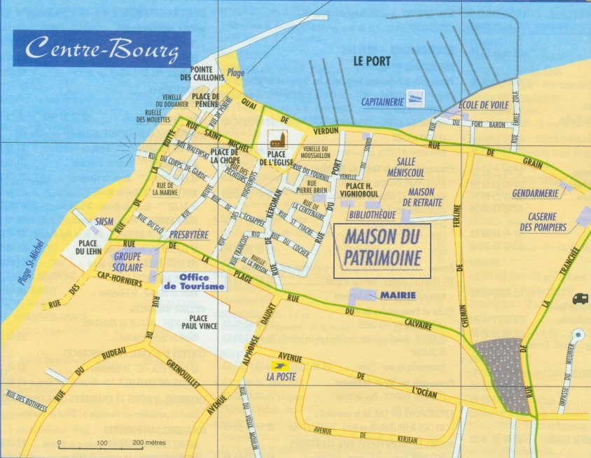

Infos pratiques
Horaires d’ouverture :
La Maison du Patrimoine est ouverte toute l’année sur rendez vous.
Par ailleurs ouvertures permanentes :
Avril à Juin :
-
Tous les samedis, dimanches et jours fériés de 15h à 18h
Juillet et Août :
-
Tous les jours de 15h à 19h
(visites accompagnées de 16h à 18h sauf le dimanche)
-
Jeudis et Vendredis matin de 10h à 12h
-
Nocturne les jeudis de 21h à 23h
Septembre :
-
Tous les jours de 14h30 à 18h
Tarifs
2 € par personne, gratuit pour les enfants jusqu´à 12 ans et pour les adhérents à jour de leur cotisation.
Groupes
Il est possible en dehors de ces périodes d´accueillir des groupes sur rendez-vous avec visites commentées. Laissez votre message sur le répondeur, et les responsables vous contacteront pour vous fournir toutes informations.
Coordonnées, Accès :
Adresse : 3 place Henri Vignioboul - 44420 Piriac sur Mer
Accès possible handicapés avec fauteuil roulant
Tél. : 02 40 15 59 71
Courriel : patrimoinepiriac@yahoo.fr
Plan d’accès :
